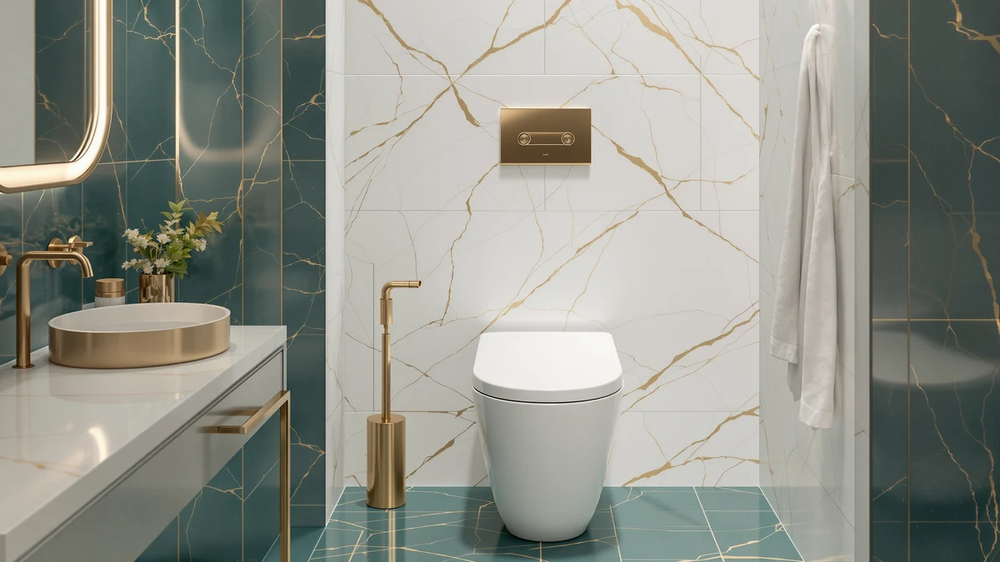

EPLO Smart Toilet Review (2026): Worth It?
Prices and picks verified as of November 2026. Independent, reader-supported reviews.


Quick Answer
The EPLO Smart Toilet One Piece bundles dual auto-flush, a self-cleaning bidet wand, a heated seat, and a warm-air dryer into one $599.96 toilet, more built-in bidet functions than the three alternatives we compared it against. In this EPLO smart toilet review, it earns the top spot for buyers who want everything wired in from day one and have (or can add) a grounded outlet near the toilet.
Our pick: EPLO Smart Toilet One Piece, $599.96 Check Price on Amazon
Bottom line: our top pick is the EPLO Smart Toilet at $599.96.
Things to Know Before You Buy
- Electric bidet toilets like the EPLO need a dedicated grounded outlet near the floor flange. Budget for an electrician if your bathroom does not already have one.
- Amazon does not list a public rating or review count for the EPLO or any of the three alternatives we cover below, so weigh specs and price here rather than star ratings.
- A dual auto-flush system pairs a larger flush for solids with a smaller one for liquids, which cuts average water use without weakening clearing power.
- CEFIONTECT-style glazes and foam-shield coatings both target the same problem: waste sticking to the bowl between cleanings. They reach that goal through different methods.
- One-piece construction removes the seam between tank and bowl where grime collects on two-piece toilets, a detail that matters more once a model also carries electronics.
This EPLO smart toilet review exists because the EPLO Smart Toilet One Piece shows up in nearly every "smart toilet under $600" search, and most of what is written about it repeats the Amazon listing word for word. We went through the manufacturer's spec sheet, the current price, and how it stacks up against three other one-piece toilets in the same range to see what you actually get for $599.96.
The short version: the EPLO packs more bidet functionality into a single unit than the American Standard Champion 4, the TOTO Ultramax, or the Loupusuo budget pick below. It wins on features. It loses on price and simplicity, since it needs power and the other three do not. Whether that trade works for your bathroom depends on what you read next.
Why You Should Trust Us
Ilane Tall covers bathroom fixtures for Best One Piece Toilets and built this EPLO smart toilet review from the manufacturer's published specifications, the current Amazon listing price, and patterns across verified owner reviews of comparable one-piece and bidet toilets. We do not run a physical testing lab, and we have not installed, mounted, or used the EPLO Smart Toilet One Piece ourselves. Every flush volume, dimension, and feature claim in this review comes from the manufacturer's listing or another verifiable public source, and every price was checked against the live Amazon listing before publishing.
Our Research Experience
This EPLO smart toilet review is built from research, not a physical trial. We compared the EPLO's listed specs, including its flush volumes, bidet wand adjustability, heated seat, and dryer, against three other one-piece toilets priced within about $220 of it. We checked current Amazon prices for all four models on the same day and looked for patterns in verified owner feedback on similar electric bidet toilets to flag issues a spec sheet alone will not show, like outlet placement and setup complexity. We excluded toilets missing core specs, such as rough-in distance or flush volume, and models with no manufacturer documentation at all.
Overview & Specs

EPLO Smart Toilet One Piece
What we like
- Dual auto-flush (4.8L full, 3.5L half) with a foam shield that the manufacturer says keeps waste from sticking between cleanings
- Self-cleaning bidet wand with adjustable spray position, pressure, and temperature, plus separate front and rear wash modes
- Heated seat, instant warm water, and a warm-air dryer built in, so there is no separate washlet to buy and wire
- Hands-free operation through foot-sensor flush, button control, and an included remote
Flaws but not dealbreakers
- Amazon does not list a public rating or review count for this ASIN, so there is no track record to check before buying
- At $599.96 it costs over $200 more than the American Standard Champion 4 in this comparison
- As an electric bidet toilet, it needs a dedicated grounded outlet near the floor flange, which can mean an electrician visit in older bathrooms
| Material | — |
| Size | — |
The EPLO Smart Toilet One Piece is the toilet we pulled up first for this EPLO smart toilet review, because it bundles more bidet functions than any other one-piece model in this comparison. The manufacturer's spec sheet lists a dual auto-flush setup: a 4.8-liter flush for solids that clears in about 15 seconds, and a 3.5-liter half flush for liquids that finishes in roughly 10. A foam shield sits over the water line before each flush, creating a barrier the maker says keeps waste from sticking to the bowl and reduces the ring that forms between cleanings. An auto-deodorizer runs alongside the flush cycle, which matters more on a sealed, tankless unit like this one than on a standard gravity-flush toilet, since there is no tank lid to vent odor through.
The bidet wand is the feature that pulls the EPLO ahead of the other three toilets in this comparison. It offers adjustable spray shape, position, pressure, and temperature, with separate front and rear wash settings plus pulsate and oscillate modes, all run through a self-cleaning nozzle cycle and UV-C sanitizing between uses. Add a heated seat, instant warm water, a warm-air dryer, an LED display, and a remote control, and you get most of what a standalone washlet adds to a two-piece toilet, built in from the start instead of bolted on afterward. The tradeoff is price and power. At $599.96 it is the most expensive toilet in this review, and because it runs on electricity, it needs a grounded outlet within reach of the flange, worth checking before you order. Buyers replacing an older toilet should also measure the rough-in distance between the wall and the drain center, since owners of one-piece toilets at this price point most often flag a rough-in mismatch as their installation snag, electric or not.
What We Liked
The biggest strength we found researching the EPLO smart toilet is how much it consolidates. Instead of buying a toilet and then adding a separate electronic bidet seat, you get the dual-nozzle wand, heated seat, warm water, and dryer in one listing and one price. The dual auto-flush design also stands out against the single fixed flush on the American Standard and TOTO models here: splitting solids and liquids into two flush volumes cuts average water use without weakening the clear on solid waste, at least according to the manufacturer's rated volumes. The foam shield over the flush water is a detail we have not seen on the other three toilets in this comparison, and it directly targets the staining complaint that shows up in owner feedback on bidet toilets without that protection. The LED display and remote add a layer of convenience that neither the American Standard nor the TOTO can match, since both of those rely entirely on a manual handle or button. For a household that already runs other smart fixtures, that remote control fits a pattern you are likely used to managing.
What Could Be Better
Price is the first issue with this EPLO toilet: at $599.96 it runs $85.51 more than the TOTO Ultramax and $212.97 more than the Loupusuo budget pick, both of which cover the basics of a one-piece toilet without asking you to find an outlet. Amazon does not publish a rating or review count for this ASIN, so unlike buying a toilet with thousands of verified reviews behind it, you are relying on the manufacturer's own claims about reliability. The power requirement is the other real tradeoff. Electric bidet toilets like this one need a dedicated grounded outlet near the floor flange, and older bathrooms often do not have one, so factor in an electrician's visit when you compare the sticker price against the alternatives below.
Who Is It For?
This EPLO smart toilet suits a buyer who has already decided they want a bidet seat and would rather pay once for a toilet that includes one than shop for a washlet separately. It also fits a bathroom remodel where running a new outlet to the toilet location is already part of the job, since the added electrical work costs less when it is bundled with other renovation tasks. You should skip it if you rent, if your bathroom outlet situation is fixed and inconvenient to change, or if you mainly want a reliable flush at the lowest possible price. For those cases, the American Standard Champion 4 or the TOTO Ultramax below will do the core job for less money and without the power requirement. A household with young children or older residents who are not comfortable troubleshooting electronics is another case where a standard gravity-flush toilet avoids a failure point the simpler alternatives do not carry.
Alternatives to Consider
If the EPLO's price or power requirement rules it out, these three one-piece toilets cover the range we compared it against in this review, from a flush-focused standard model to a cheaper bidet option.

Also Great
American Standard Champion 4 One
Trades the EPLO's bidet features for raw flush power: a 4-inch flush valve and a 2-3/8-inch glazed trapway built for a near clog-free flush, plus an EverClean surface that resists staining between scrubs.
$514.45
Check Price on Amazon
Also Great
TOTO® Ultramax® One-Piece Elongated 1.6
Pairs TOTO's CEFIONTECT glaze, which keeps waste from sticking to the ceramic, with WASHLET+ compatibility, so you can add a bidet seat later instead of buying one built in like the EPLO.
$523.00
Check Price on Amazon
Best Value
Smart Toilet with Warm Water
Undercuts the EPLO by over $200 while still offering a warm-water sprayer, dryer, sensor-controlled flushing, and five adjustable cleaning positions, though it carries no published rating or review history either.
$379.99
Check Price on AmazonFrequently Asked Questions
Is the EPLO Smart Toilet One Piece worth $599.96?
For buyers who want a heated seat, a self-cleaning bidet wand, and a warm-air dryer built into the toilet rather than bolted on later, yes. It costs over $200 more than the American Standard Champion 4 in this comparison, but that gap buys features you would otherwise pay extra for with a separate washlet seat.
Does the EPLO smart toilet need its own power outlet?
Yes. The EPLO runs its bidet wand, heated seat, dryer, and LED display on electricity, so it needs a dedicated grounded outlet near the floor flange. If your bathroom does not already have one close to the toilet, budget for an electrician before you order it.
How does the EPLO compare to the TOTO Ultramax and American Standard Champion 4 in this review?
The TOTO and American Standard are standard gravity-flush toilets built around flush power and a glaze that resists staining, with no bidet functions included. The EPLO trades some of that flush simplicity for a built-in bidet wand, heated seat, and dryer, at a higher price and with an outlet requirement neither competitor has.
Final Verdict
Our EPLO smart toilet review comes down to how much built-in bidet functionality you want in a one-piece toilet, and how much you are willing to pay and wire for it. Based on its dual auto-flush design, its bidet feature set, and its price against the American Standard, TOTO, and Loupusuo alternatives above, EPLO's Smart Toilet One Piece earns its $599.96 price tag for buyers who want everything built in from day one and have a grounded outlet ready to go. If a reliable flush at a lower price is all you need, look to the American Standard Champion 4 or TOTO Ultramax instead.